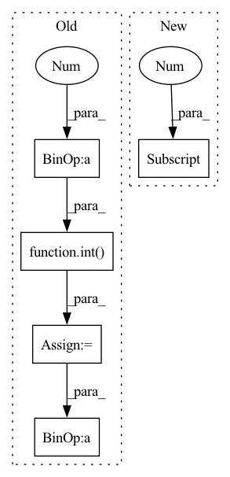

Pattern ID :1428

Before Change
super().__init__()
// parameters of the network
base_channels = int(wid_mul * 64) // 64
base_depth = max(round(dep_mul * 3), 1) // 3
assert out_features, "please provide output features of Darknet!"
self.out_features = out_features
// stem
self.stem = Focus(3, base_channels, ksize=3, norm=norm, act=act)
// dark2
self.dark2 = nn.Sequential(
BaseConv(base_channels, base_channels * 2, 3, 2, norm=norm, act=act),
CSPLayer(
base_channels * 2,
base_channels * 2,
num_bottle=base_depth,
norm=norm,
act=act,
),
)
// dark3
self.dark3 = nn.Sequential(
BaseConv(base_channels * 2, base_channels * 4, 3, 2, norm=norm, act=act),
CSPLayer(
base_channels * 4,
base_channels * 4,
num_bottle=base_depth * 3,
norm=norm,
act=act,
),
)
// dark4
self.dark4 = nn.Sequential(
BaseConv(base_channels * 4, base_channels * 8, 3, 2, norm=norm, act=act),
CSPLayer(
base_channels * 8,
base_channels * 8,
After Change
self.dark4 = nn.Sequential(
BaseConv(channels[2], channels[3], 3, 2, norm=norm, act=act),
CSPLayer(
channels[3],
channels[3],
num_bottle=base_depth * 3,
norm=norm,
In pattern: SUPERPATTERN
Frequency: 3
Non-data size: 5
Instances
Fragment ID: 6619749
Project Name: iywie/pl_yolo
Commit Name: a3c6bbe72d4f783d07b149010897c34fd45454ed
Time: 2022-01-21
Author: zhouyw96@outlook.com
File Name: models/backbones/darknet_csp.py
M Class Name: CSPDarkNet
N Class Name: CSPDarkNet
M Method Name: __init__(6)
N Method Name: __init__(6)
M Parent Class: nn.Module
N Parent Class: nn.Module
M File Name: models/backbones/darknet_csp.py
N File Name: models/backbones/darknet_csp.py
M Start Line: 20
M End Line: 70
N Start Line: 25
N End Line: 69
'>
Before Change
def CSPDarknet(width_mul=1, depth_mul=1, out_features=[-3, -2, -1], use_depthwise_conv=False, input_shape=(512, 512, 3), activation="swish", model_name=""):
base_channels = int(width_mul * 64)
inputs = keras.layers.Input(input_shape)
Stem
nn = conv_dw_pw_block(inputs, 32, kernel_size=3, strides=1, activation=activation, name="stem_1_") // Fixed as 32
nn = conv_dw_pw_block(nn, base_channels, kernel_size=3, strides=2, activation=activation, name="stem_2_")
nn = csp_block(nn, expansion=0.5, activation=activation, name="stem_3_")
features = [nn]
dark blocks
depthes = [max(round(depth_mul * ii), 1) for ii in [2, 8, 8, 4]] // YOLOR_CSP depth
channels = [base_channels * 2, base_channels * 4, base_channels * 8, base_channels * 16]
use_spps = [False, False, False, True]
for id, (channel, depth, use_spp) in enumerate(zip(channels, depthes, use_spps)):
stack_name = "stack{}_".format(id + 1)
After Change
inputs = keras.layers.Input(input_shape)
Stem
stem_width = stem_width if stem_width > 0 else channels[0] // 2
if use_focus_stem:
nn = focus_stem(inputs, stem_width, activation=activation, name="stem_")
else:
'>
Fragment ID: 6619511
Project Name: leondgarse/keras_cv_attention_models
Commit Name: bef44f2c07106cb7cf251facb6581ef6220cde48
Time: 2022-03-18
Author: leondgarse@gmail.com
File Name: keras_cv_attention_models/yolor/yolor.py
M Class Name: AnonimousClass
N Class Name: AnonimousClass
M Method Name: CSPDarknet(12)
N Method Name: CSPDarknet(7)
M Parent Class:
N Parent Class:
M File Name: keras_cv_attention_models/yolor/yolor.py
N File Name: keras_cv_attention_models/yolor/yolor.py
M Start Line: 84
M End Line: 102
N Start Line: 109
N End Line: 141
'>
Before Change
vec = torch.take(self.centroids[self.nbits], bins)
for i in range(self.num_hadamard):
vec = self.irht(vec, int(seed + (self.num_hadamard - 1) - i))
return (scale * vec)[:int(dim)].cpu().numpy()
// packing the quantization values to bytes
def to_bits(self, int_bool_vec):
After Change
bins = self.from_bits(torch.Tensor(bins).to(self.device)).long().flatten()
seed = int(metadata[0])
total_dim = int(metadata[1])
curr_index = 0
vec = []
'>
Fragment ID: 6619680
Project Name: intel/openfl
Commit Name: c10577cb32201c45846d920f871e4bcab76e37ed
Time: 2023-01-13
Author: 30897761+yanivbi@users.noreply.github.com
File Name: openfl/pipelines/eden_pipeline.py
M Class Name: Eden
N Class Name: Eden
M Method Name: decompress(3)
N Method Name: decompress(5)
M Parent Class:
N Parent Class:
M File Name: openfl/pipelines/eden_pipeline.py
N File Name: openfl/pipelines/eden_pipeline.py
M Start Line: 252
M End Line: 260
N Start Line: 337
N End Line: 354